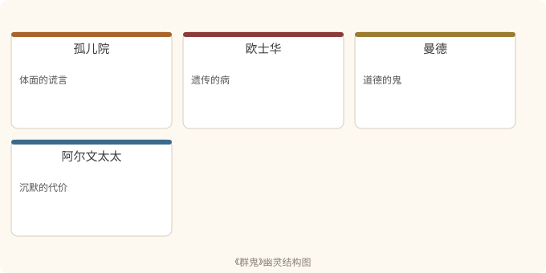

群鬼
一、基本信息
| 作者 | 易卜生 |
|---|---|
| 成书/出版 | 1881年（作者页 B044/B019 口径：群鬼（1881）） Henrik Ibsen — Encyclopaedia Britannica (by Robert M. Adams)（百科全书） |
| 国别/地区 | 挪威 |
| 时代 | 近代 · 19世纪 |
| 体裁 | 话剧 |
| 语言 | 挪威语 |

《群鬼》幽灵结构图（主题·结构图）
二、创作背景
作者页（B044/B019）：易卜生 major_works 载'培尔·金特（1867）、群鬼（1881）、野鸭（1884）'（作者页定位，详见 wanou 条核对）。
题材（通说待核）：阿尔文太太为维持体面'建孤儿院'——梅毒与幽灵般的旧道德。
三、内容脉络
欧士华回家——遗传的病与母亲的沉默（通说待核）。
'群鬼'：我们都被死人思想所'闹鬼'（台词意，通说待核）。
四、主要人物表
| 人物 | 身份 | 说明 |
|---|---|---|
| 阿尔文太太 | 寡妇 | 体面的牺牲者（通说待核） |
| 欧士华 | 儿子 | 病中的艺术家（通说待核） |
| 曼德牧师 | 牧师 | 虚伪的道德（通说待核） |
五、主题与艺术特点
- 旧道德的'群鬼'（通说）。
- 遗传与谎言（通说待核）。
- 社会问题剧的激进化（通说——比《玩偶之家》更受争议）。
六、影响与评论
- 作者页：易卜生代表作（B044/B019 作者页口径）。
Henrik Ibsen — Encyclopaedia Britannica (by Robert M. Adams)（百科全书） - 1881年出版后遭书店退回与教会围剿（通说待核）。
Henrik Ibsen — Encyclopaedia Britannica (by Robert M. Adams)（百科全书）
七、阅读建议
难点
- 挪威信义宗背景。
- '群鬼'的隐喻层次。
- 《易卜生文集》（人民文学出版社，通说待核）。
- 挪威文原版（公有领域）。
《玩偶之家》→《群鬼》→《野鸭》。
八、待核实
- 1881年出版与首演延宕（1882年瑞典说）核对。
- 阿尔文/欧士华/曼德人名核对。
- '群鬼'台词原文待核。
本页主要来源
- Henrik Ibsen — Encyclopaedia Britannica (by Robert M. Adams)（百科全书）
- A Doll's House (Et dukkehjem) — Encyclopaedia Britannica（百科全书）
易卜生的其他收录作品：玩偶之家